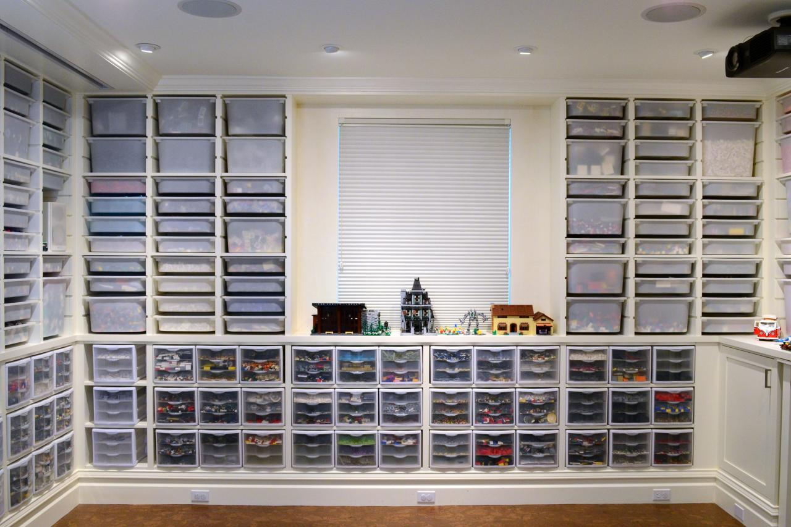
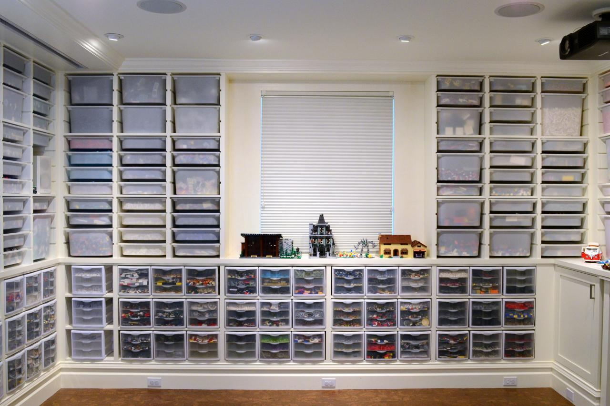

Organizing Your LEGO Bricks
How to best organize your large (or growing) LEGO collection is an ongoing challenge for many LEGO builders. Let’s find the best solution for your collection.
In a classic Lugnet article(
The evolution of LEGO sorting, 2001), Remy Evard highlighted the challenges LEGO collectors face when organizing a growing LEGO collection.
- Most LEGO enthusiasts start with a pile of unsorted LEGO pieces
- As the collection continues to grow, they decide to sort by set.
- They soon realize they can’t find the piece they need, so they re-sort by color.
- They very quickly realize that’s even worse, since it’s impossible to find a specific small part in a container of just black parts, so they re-sort by part.
- That works pretty well, but eventually their collection grows even bigger, so they sort by both part and color.
- Eventually, they have so many of common parts in common colors that they need to get even larger containers for each part/color or a system of overflow storage.
While Remy’s story is exaggerated for comedic effect, most of the LEGO builders I’ve met had similar experiences… Let’s try to learn from these mistakes and skip a few steps!In a classic Lugnet article
Levels of Organization
As your collection grows from a small unsorted collection to a large well-organized collection, you will want to organize the pieces into categories that make sense to you. You could follow an existing taxonomy (such as the BrickLink categories), or create your own categories based on parts that work well together for the types of models that you like to build.
Along the way, many people end up purchasing LEGO storage solutions that they outgrow or don’t work well. Even if you only have a small collection now, this guide helps you avoid common pitfalls by selecting an appropriate storage solution for your current collection which you can continue to use as your collection grows.
We’re going to to explore the most common ways to organize a LEGO collection, following the normal progression from no organization, to sorting by categories, and ultimately organizing by part.
Along the way, many people end up purchasing LEGO storage solutions that they outgrow or don’t work well. Even if you only have a small collection now, this guide helps you avoid common pitfalls by selecting an appropriate storage solution for your current collection which you can continue to use as your collection grows.
We’re going to to explore the most common ways to organize a LEGO collection, following the normal progression from no organization, to sorting by categories, and ultimately organizing by part.
 
Organizing into Groups
If it becomes frustrating to find specific LEGO pieces because your collection has grown too large, it might be time to organize your collection into groups of related parts. Even if you aren’t keen to organize your bricks, it’s probably a good time to organize your parts into broad groups when your collection grows too large to fit in a single container.

Most LEGO builders recommend that you start by sorting your LEGO parts by category rather than by color.
Organizational Groups
- Organizing by Color – Almost everyone begins by sorting their LEGO bricks by color. Unfortunately, most LEGO builders quickly discover that this makes it really hard to find a specific small part, as it’s hard to pick out a specific small part in a container full of bricks of the same color.
- Organizing by Category – As you become familiar with common LEGO parts, you should try sorting them into categories based on their type. A good place to start would be to separate ‘Bricks’, ‘Plates’, and ‘Other’ LEGO parts into three different containers. (Even if you only have three categories, the next time you are looking for a specific part, you only need to dig through 1/3 as many parts since you know which of the three containers it should be in.)
As your collection continues to grow, you can make the categories more precise using additional storage containers. (For example, splitting a container filled with ‘Plates’ into ‘1x Plates’, ‘2x Plates’, and ‘Large Plates’.)